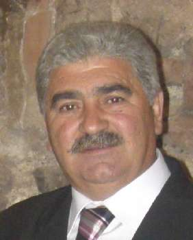

Diego López Alarcón
Diego López Alarcón  Diego López Alarcón
Diego López Alarcón 
 Haz clic aquí para detalles de la Familia de Diego con Estrella García Simarro
Haz clic aquí para detalles de la Familia de Diego con Estrella García Simarro
This page is within a frameset. View the entire genealogy report of López Alarcón families, or surname index of López Alarcón pedigrees or report summary of López Alarcón heritage from "Árbol Genealógico de Manolo y Amalia".
View a family tree from Gedcom file.
© 2006 GenoPro Inc. All Rights Reserved.